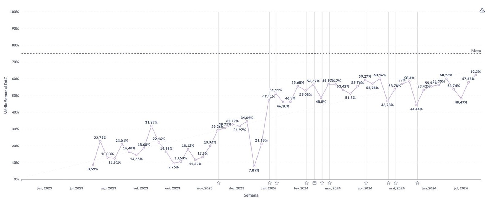

I joined Genial Care, Brazil's leading platform for autism care, as its first Senior Product Designer, brought in to build the Atípico design system from scratch, improve the family-facing app, and stand up the clinical panel therapists use to run sessions (the same panel LIAM would later live inside). This case is about the app half of that mandate.
When I joined, the app was a one-way channel: articles and content cards to read, with no direct interaction of any kind. You couldn't do anything in it. You could only look at things. About 8% of families opened it on a given day, which is roughly what you'd expect from a digital pamphlet.
The bottleneck wasn't the app. It was scheduling.
Instead of starting from the app, we started by mapping the biggest process gaps across Genial Care as a whole. One stood out immediately: session scheduling. Every family's weekly schedule, dozens of therapists and dozens of time slots, was built by hand by the operations team. The moment anything changed, a reschedule, a cancellation, that manual process broke. Information about who knew what lived across phone calls and spreadsheets, nothing was centralized, and keeping everyone aligned consumed a disproportionate share of the team's time every single week.
That was the actual opportunity: not a content problem, but an operations problem wearing a UX costume.
It wasn't a content problem. It was an operations problem wearing a UX costume.
How I worked: continuous discovery, not a big-bang redesign
I didn't run this as a single project with a launch date. I ran it as a loop: talk to people, ship the smallest useful thing, watch what they actually do, decide the next bet from that. That's the reason the app kept climbing instead of spiking once and flattening.
-
Talked to both sides of the problem
Interviews with families to understand why they weren't opening the app, and with the operations team to map where their week actually went. The insight that scheduling was the shared pain came from listening to ops, not from looking at the app.
-
Tied every decision to one metric
We set daily engagement as the north star and filtered every idea through a single question: would this give a family a reason to open the app on a day they otherwise wouldn't? Ideas that couldn't answer it didn't get built.
-
Prototyped and tested before building
Each feature started as a clickable prototype run past a handful of real families, so we caught the confusing parts of a flow before engineering time went into it.
-
Shipped narrow, then read the behavior
Small releases into real usage, measured against the metric, with the analytics telling us where people entered, what they used, and where they still dropped, which set the next release instead of a roadmap written up front.
My role
Senior product designer end to end: discovery, research, interaction and UI, prototype, and working alongside engineering through launch, across iOS, Android, and web.
The team
Worked directly with a product manager, the operations lead, and a small engineering squad, plus the clinical team as domain experts on what families needed to see.
The opening move: let families act, not just read
We scoped an MVP around the two actions responsible for most of the manual back-and-forth: showing each child's upcoming sessions inside the app, and letting families cancel a session themselves instead of routing it through a phone call. Discovery, prototype, and build: one month, start to finish, deliberately small so we'd get a real answer fast instead of a better guess slowly.
It launched, and the result wasn't ambiguous. Families used it immediately, cancellations started coming through the app instead of the phone, and operations felt the relief right away: the manual, repetitive core of their week had a real alternative.
That first release proved something bigger than the feature itself: give families a reason to act, not just read, and they'll show up. From there, we kept adding to it, each new feature earning its place by giving someone another reason to open the app, and each one pulling another manual task off operations so the team could focus on higher-value work instead of rebuilding the same schedule by hand every week.

The result of that first MVP: upcoming sessions and a therapist's note on the home screen, with cancellation now handled in-app instead of by phone.
Then: make the long-term visible, not just the next appointment
Sessions answer "what happened this week." They don't answer the question underneath every parent's week, which is "is my child actually progressing?" The PEI, the individualized education plan, already existed as a clinical document, but it lived where families couldn't see it. I brought it into the app as a plain-language list of the skills being worked on, each with a start date: Gabriel will play with different toys. Gabriel will be able to climb the ball pit.
This is a different kind of move than the scheduling MVP: not a new capability, but taking something the clinical side already produces and putting it where the family can see their child inside it.

The PEI, translated from clinical document into something a parent can read: concrete skills, in plain language, with dates.
And then: the moment between sessions
The hardest moments for these families don't happen during a session. They happen at 8pm on a Tuesday when a child bites someone and a parent has no idea what to do. Genial Junto opened a direct line to a Genial advisor for exactly that: describe the difficult situation, get a real, specific answer back within a stated response window.
Design-wise, the decision I care about here is the visible response-time badge. An open-ended "we'll get back to you" invites people to check obsessively and then lose trust. Stating "up to 2 business days" up front sets the expectation once, honestly, and lets the parent put the phone down.

Genial Junto: support for the moments between sessions, with the response-time expectation stated before the parent writes anything.
The curve is the argument
None of the above launched as one release. Each was a small bet against the same bar (does this give someone a reason to come back?), shipped narrow, then measured before the next one started. The weekly active-user chart below is the honest version of that story, release markers and all: it isn't a hockey stick, it's a staircase with visible dips, where each step up follows a release and each dip taught us something before the next one.
It isn't one redesign that worked. It's a staircase, each step a bet that had to prove itself before the next one started.

Weekly average DAU, Jun 2023 → Jul 2024: 8.59% to 62.3%. Star markers are releases: the growth tracks them, which is the point.
How it was measured: daily active users tracked in the product analytics platform as a weekly average of unique families opening the app, from the first release baseline through peak. The chart above is the raw weekly series over that period.
What I'd defend in a design review
The number people react to is 62%. The decision I'd actually defend is the one that came before it: we didn't start in the app at all. We started by mapping process gaps across the whole company, and the biggest one turned out to be a scheduling problem, not a content problem. A redesign brief would never have surfaced that: it takes looking at operations, not just at screens, to find it.
The second is scoping the MVP around actions, not features. Showing a schedule and enabling cancellation are unglamorous compared to a full engagement suite, but they were the two things actually driving operations' manual workload, so they were the two things worth building first, in a month, to get a real answer instead of a better guess.
The third is what happened after the MVP proved itself: the PEI and Genial Junto additions were a different kind of move, not fixing an operational bottleneck, but surfacing clinical value Genial Care already produced and simply wasn't showing families. Knowing which of those two levers to pull, and when, is most of what this case is actually about.
What came next
Once families were opening the app daily, the constraint moved to the other side of the platform: the therapists. Their bottleneck was documentation: up to two hours after every session, reconstructing what happened from memory for mandatory clinical reports. That became the next project, LIAM.
LIAM: AI clinical documentation
An assistant that lets therapists narrate a session out loud as it happens, then drafts the required report fields for review. Session documentation went from ~2 hours to ~25 minutes. Read the case →
The through-line
Both projects are the same instinct: find the moment where a person is spending effort on something that isn't the actual work, and compress it into a decision they can make quickly.